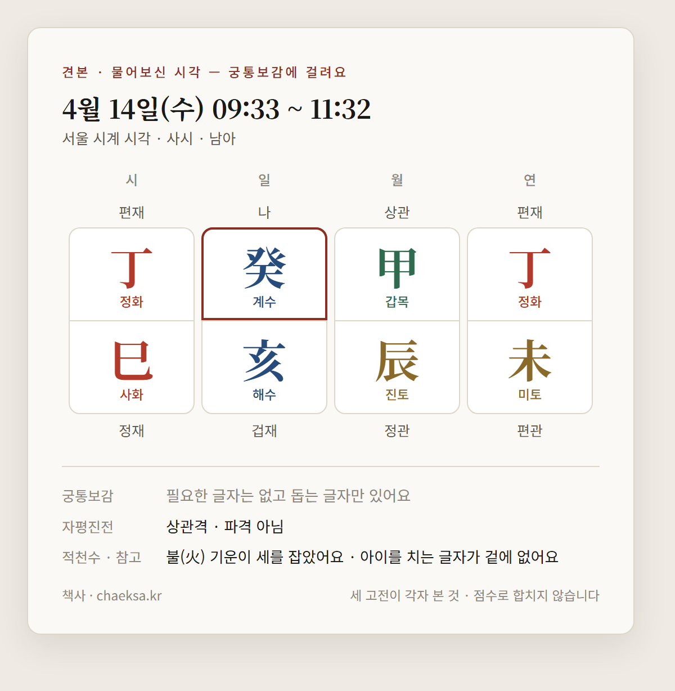
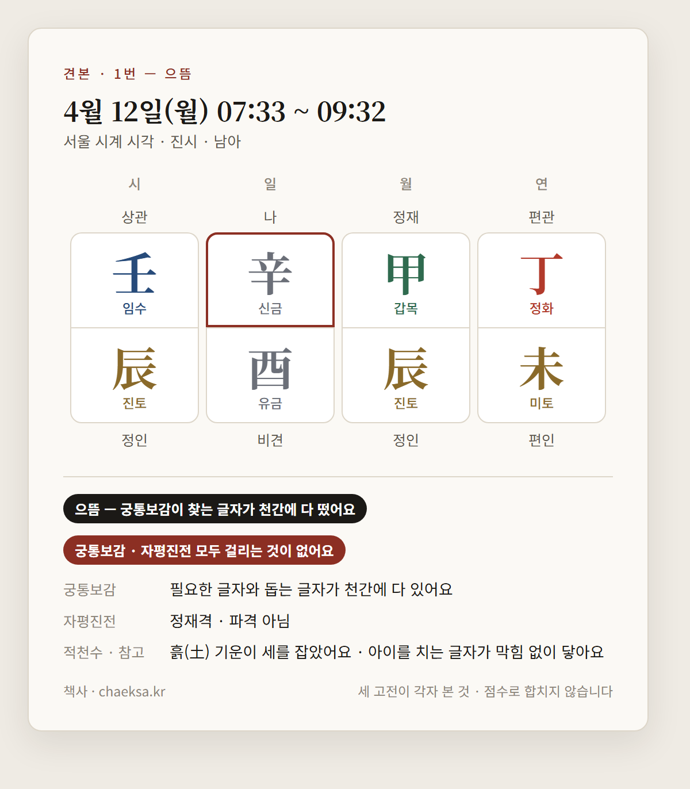
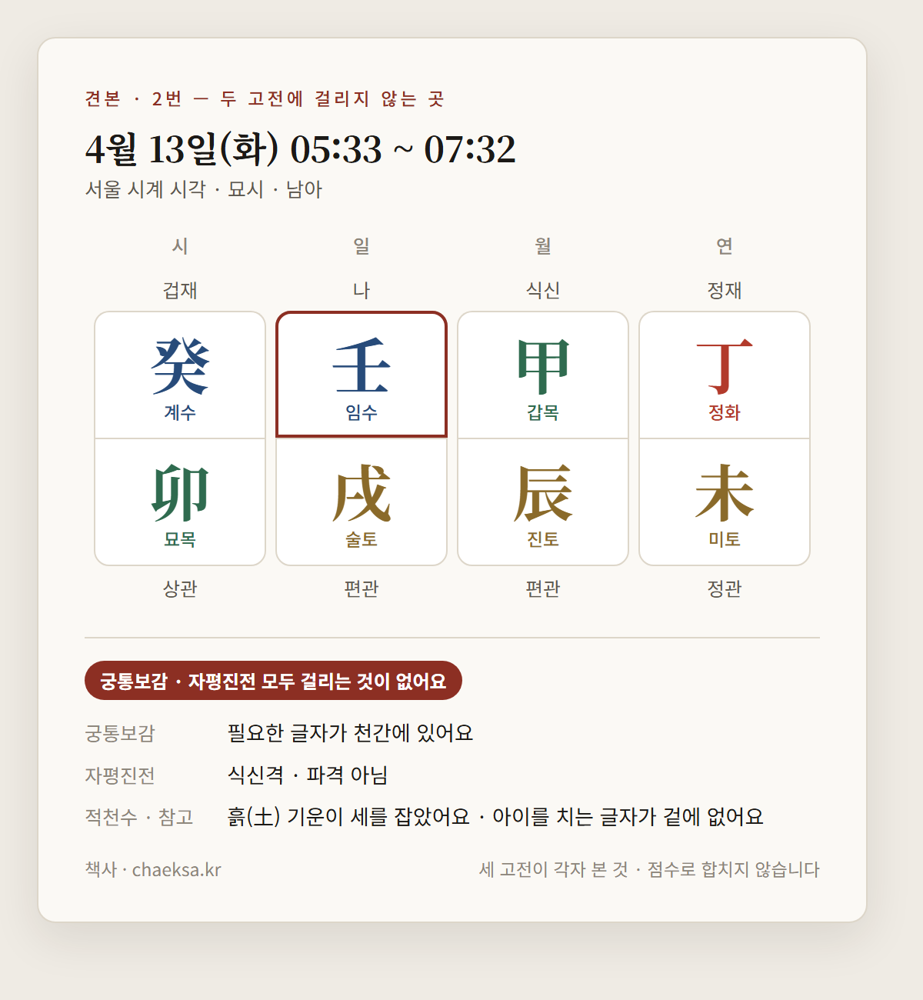

안녕하세요. 알려 주신 조건으로 계산했어요.
▸ 기간 — 4월 12일(월) ~ 16일(금), 5일
▸ 태어날 곳 — 서울 (서울 시계 시각으로 적었어요)
▸ 아기 — 남아
▸ 가족 일지 — 아버님 오(午) · 어머님 사(巳)
▸ 병원에서 된다고 하신 시간 — 7시 ~ 21시
하루를 열두 시진으로 나눠 65개 시간대를 하나도 빼지 않고 봤어요.
무엇으로 골랐나요
세 고전에게 따로 물었어요. 점수로 합치지 않았어요.
▸ 궁통보감 — 태어난 계절에 이 아이에게 필요한 글자가 천간에 있나
▸ 자평진전 — 무슨 격이고, 파격인가
▸ 적천수 — 어느 기운이 세를 잡았고, 흐름이 어디서 멈추나 (참고로만 읽어요)
궁통보감 · 자평진전 두 고전 모두 걸리는 것이 없는 곳만 남겼어요.
그 가운데 궁통보감이 적어 둔 글자가 천간에 다 있는 곳은 으뜸이라고 적었어요.
그다음 가족분들 일지와 부딪히는(충) 곳을 뺐어요.
▸ 전체 시간대 65곳
▸ 두 고전 모두 걸리는 것 없는 곳 10곳
▸ 가족과 부딪혀서 뺀 곳 2곳
▸ 병원 시간 밖이라 뺀 곳 1곳
▸ 남은 곳 7곳 (그 가운데 으뜸 1곳)
물어보신 시각부터 볼게요
4월 14일(수) 오전 10시 — 사시 오전 9시 33분 ~ 11시 32분 안이에요.

궁통보감에 걸려요.
진(辰)월에 태어난 계수(癸) 아이에게 궁통보감은 병화(丙)를 먼저 찾아요. 돕는 글자는 신금(辛)과 갑목(甲)이에요.
이 시각의 천간 글자는 정화(丁) · 갑목(甲) · 정화(丁)예요 — 병화(丙)는 없어요. 돕는 글자는 있어요.
같은 날 두 고전 모두 걸리는 것 없는 시간대는 진시 오전 7시 33분 ~ 9시 32분이에요.
다른 곳에서 받으신 시각이라면, 그곳이 틀렸다는 말은 아니에요. 보는 기준이 다르면 답도 달라요.
걸리는 것 없는 곳
날짜순이에요. 순위가 아니에요.
1. 4월 12일(월) 오전 7시 33분 ~ 9시 32분

으뜸이에요. 궁통보감이 찾는 글자와 돕는 글자가 천간에 다 있어요.
진(辰)월에 태어난 신금(辛) 아이에게 궁통보감은 임수(壬)를 먼저 찾아요. 돕는 글자는 갑목(甲)이에요.
이 시각의 천간 글자는 정화(丁) · 갑목(甲) · 임수(壬)예요 — 임수(壬)가 있어요.
자평진전으로는 정재격이고, 파격이 아니에요.
적천수(참고) — 흐름은 흙(土) 기운에서 시작해 쇠(金) 기운 → 물(水) 기운까지 가서 멈춰요 — 멈춘 곳은 임수(壬)예요.
가족 — 가족분들 일지와 부딪히지 않아요.
대운(10년마다 바뀌는 운)은 이렇게 와요. 남아 기준이에요. 2~11살 대운에 사주와 부딪히는(충) 글자가 와요. 충은 글자의 십성이 발현되거나 있던 것이 깨질 수 있어요.
▸ 2~11살 계묘(癸卯) 대운 — 천간 식신(내놓는 재주) · 지지 편재(움직이는 돈) · 나와 배우자 자리(일지)와 부딪혀요(충)
▸ 12~21살 임인(壬寅) 대운 — 천간 상관(튀는 재주) · 지지 정재(쌓이는 돈) · 계절이 먼저 찾던 임수(壬)가 와요
▸ 22~31살 신축(辛丑) 대운 — 천간 비견(나와 같은 기운) · 지지 편인(남다른 근거) · 조상 자리(연지)와 부딪혀요(충)
▸ 32~41살 경자(庚子) 대운 — 천간 겁재(겨루는 기운) · 지지 식신(내놓는 재주)
▸ 42~51살 기해(己亥) 대운 — 천간 편인(남다른 근거) · 지지 상관(튀는 재주) · 격이 상관격으로 바뀌어요
병원 시간 — 평일 낮(9~17시)과 겹치는 건 33분이에요. 병원이 조금만 늦어도 시주가 바뀌어요.
2. 4월 13일(화) 새벽 5시 33분 ~ 오전 7시 32분

진(辰)월에 태어난 임수(壬) 아이에게 궁통보감은 갑목(甲)을 먼저 찾아요. 돕는 글자는 경금(庚)이에요.
이 시각의 천간 글자는 정화(丁) · 갑목(甲) · 계수(癸)예요 — 갑목(甲)이 있어요.
자평진전으로는 식신격이고, 파격이 아니에요.
적천수(참고) — 흐름은 흙(土) 기운에서 시작하는데, 다음으로 받아 줄 쇠(金) 기운이 여덟 글자에 없어서 제자리에 머물러요.
가족 — 가족분들 일지와 부딪히지 않아요.
대운(10년마다 바뀌는 운)은 이렇게 와요. 남아 기준이에요. 23~32살 대운에 사주와 부딪히는(충) 글자가 와요. 충은 글자의 십성이 발현되거나 있던 것이 깨질 수 있어요.
▸ 3~12살 계묘(癸卯) 대운 — 천간 겁재(겨루는 기운) · 지지 상관(튀는 재주)
▸ 13~22살 임인(壬寅) 대운 — 천간 비견(나와 같은 기운) · 지지 식신(내놓는 재주)
▸ 23~32살 신축(辛丑) 대운 — 천간 정인(공인된 근거) · 지지 정관(바른 자리) · 조상 자리(연지)와 부딪혀요(충)
▸ 33~42살 경자(庚子) 대운 — 천간 편인(남다른 근거) · 지지 겁재(겨루는 기운) · 계절이 찾던 돕는 글자 경금(庚)이 와요
▸ 43~52살 기해(己亥) 대운 — 천간 정관(바른 자리) · 지지 비견(나와 같은 기운) · 격이 편관격으로 바뀌어요
병원 시간 — 평일 이른 아침(7~9시) · 저녁(17~19시) 시간이에요. 협의하면 잡아 주는 병원이 있어요.
— 여기까지가 앞부분이에요. 이어서 6번까지 같은 꼴로 4곳이 더 나오고, 그 밖에 걸리는 것 없는 곳 1곳이 날짜순으로 붙어요. —
가족과 부딪혀서 뺀 곳
▸ 4월 14일(수) 진시 오전 7시 33분 ~ 9시 32분 — 아이 일지 해(亥)가 어머님 일지 사(巳)와 부딪혀요(충)
▸ 4월 15일(목) 오시 오전 11시 32분 ~ 오후 1시 31분 — 아이 일지 자(子)가 아버님 일지 오(午)와 부딪혀요(충)
두 고전으로는 걸리는 것이 없는 곳이에요. 가족과의 충을 크게 보지 않으시면 쓰셔도 돼요.
날짜별로 전부
날마다 열두 시진을 다 적었어요. 굵은 것이 두 고전 모두 걸리는 것 없는 곳이에요.
▸ 4월 12일(월) 신유(辛酉)일
자 00:00~01:32 · 궁통보감 걸림(필요한 글자 없음, 돕는 글자만) · 자평진전 걸림(정인격 파격)
축 01:33~03:32 · 궁통보감 걸림(필요한 글자 없음, 돕는 글자만) · 자평진전 걸림(편인격 파격)
인 03:33~05:32 · 궁통보감 걸림(필요한 글자 없음, 돕는 글자만) · 자평진전 걸림(정재격 파격)
묘 05:33~07:32 · 궁통보감 걸림(필요한 글자 없음, 돕는 글자만) · 자평진전 걸림(정재격 파격)
진 07:33~09:32 · 걸리는 것 없음 · 으뜸 · 정재격
사 09:33~11:32 · 궁통보감 걸림(필요한 글자 없음, 돕는 글자만)
오 11:33~13:32 · 궁통보감 걸림(필요한 글자 없음, 돕는 글자만)
미 13:33~15:32 · 궁통보감 걸림(필요한 글자 없음, 돕는 글자만)
신 15:33~17:32 · 궁통보감 걸림(필요한 글자 없음, 돕는 글자만)
유 17:33~19:32 · 궁통보감 걸림(필요한 글자 없음, 돕는 글자만)
술 19:33~21:32 · 궁통보감 걸림(필요한 글자 없음, 돕는 글자만) · 자평진전 걸림(정인격 파격)
해 21:33~23:32 · 궁통보감 걸림(필요한 글자 없음, 돕는 글자만) · 자평진전 걸림(편인격 파격)
자(밤) 23:33~23:59 · 자평진전 걸림(식신격 파격)
— 남은 4일도 같은 꼴로, 시간대마다 한 줄씩 이어져요. —
자(밤)은 밤 11시 넘어 자정까지예요. 이때 태어나면 다음 날 일주가 돼요.
시계 시각을 꼭 확인하세요
위 시각은 서울 기준으로 날마다 보정을 마친 시계 시각이에요.
이 기간 서울은 시계가 해보다 32~33분 빨라요. 그래서 교과서 시진표와 시각이 달라요.
시간대의 시작과 끝에서는 앞뒤로 10분쯤 여유를 두세요.
병원에는 시진 이름 말고 시계 시각으로, 몇 시 몇 분 이후라고 말씀하세요.
출산 날짜와 시각은 산모와 아기의 안전, 담당 선생님의 판단이 먼저예요.
택일은 그 범위 안에서 고르는 참고자료예요.
다른 기준으로 보는 곳에서는 다른 시각이 나올 수 있어요. 그 집이 틀린 게 아니에요.
chaeksa.kr 출산택일 시뮬레이터에 날짜를 넣으시면 같은 결과를 직접 보실 수 있어요.
날짜가 정해지면 확정된 시각을 알려 주세요. 최종 사주를 확인해 드릴게요.
순산하시길 바랍니다.